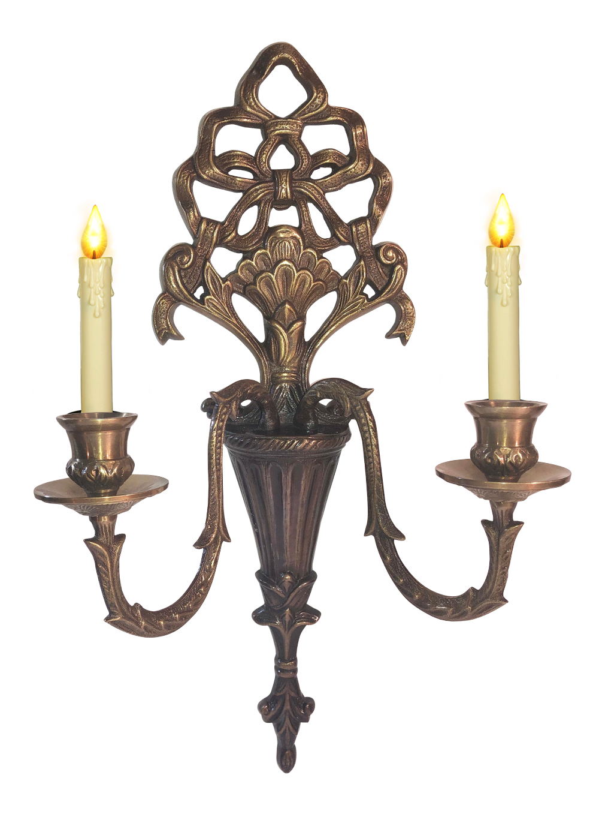
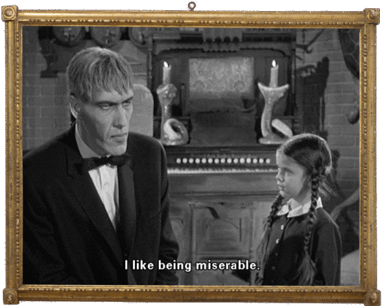
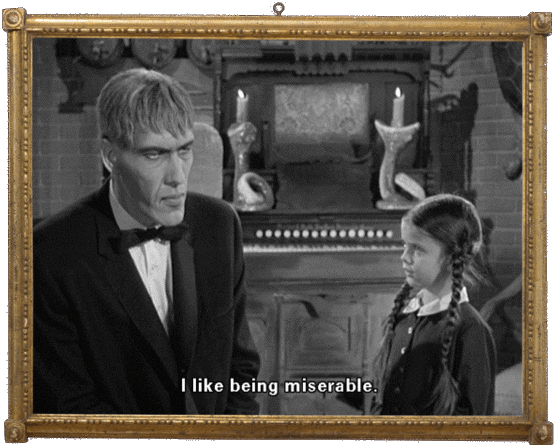

- 
-
"We have made [the family] full-bodied people, not monsters... They are not grotesque and hideous manifestations. At the same time we are protecting the images of [Charles] Addams' 'children', as he refers to them. We are living up to the spirit of his cartoons. He is more than just a cartoonist. He's a social commentator and a great wit."
-
The Addams Family are a close-knit extended family with decidedly macabre interests and supernatural abilities, though no explanation for their powers is explicitly given in the series. The wealthy, endlessly enthusiastic Gomez Addams is madly in love with his refined wife, Morticia. Along with their daughter Wednesday, their son Pugsley, Uncle Fester, and Grandmama, they reside at 0001 Cemetery Lane in an ornate, gloomy, Second Empire-style mansion, which is portrayed by the house at 21 Chester Place in Los Angeles. The theme song contains the lyric, "Their house is a museum" which is borne out by the variety of objects in the interior scenes, some of which are collector's items and others which are only bizarre (such as the mounted swordfish head with a human leg protruding from the mouth). Somebody stole these props after the show was canceled.
The family is attended by their servants: towering butler Lurch; and Thing, a disembodied hand that appears from within wooden boxes and other places. Other relatives who made recurring appearances included Cousin Itt, Morticia's older sister Ophelia, and Morticia's mother Grandma Frump. Many guest stars who were mainly famous during the era came in the show playing a cameo part as the script permitted (for example, truant officer, insurance salesman, etc.)
Much of the humor derives from the Addamses' culture clash with the rest of the world. They invariably treat normal visitors with great warmth and courtesy, even when the guests express confusion, fear and dismay at the decor of the house and the sight of Lurch and Thing. Some visitors have bad intentions, which the family generally ignore and suffer no harm. The Addamses are puzzled by the horrified reactions to their own good-natured and (to them) normal behavior. Accordingly, they view "conventional" tastes with generally tolerant suspicion. Almost invariably, as a result of their visit to the Addamses, a visitor only wants to leave and never come back.
 
